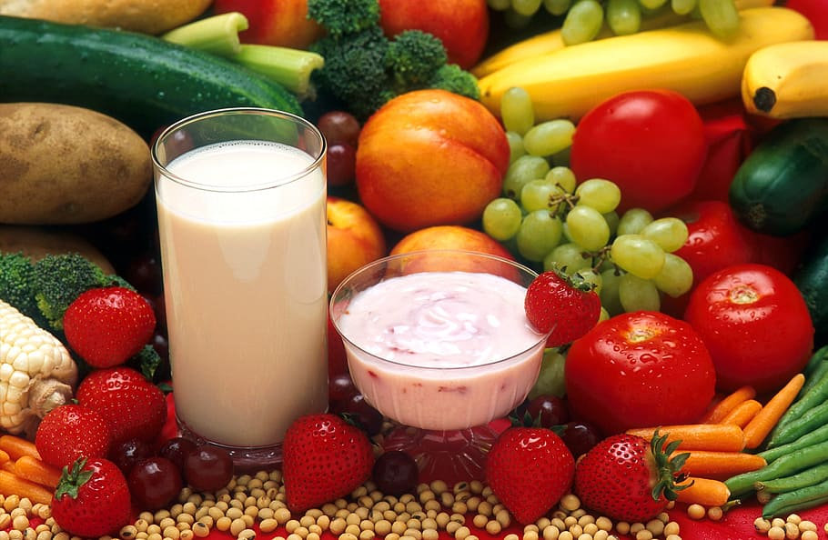
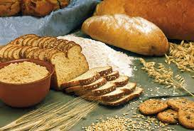
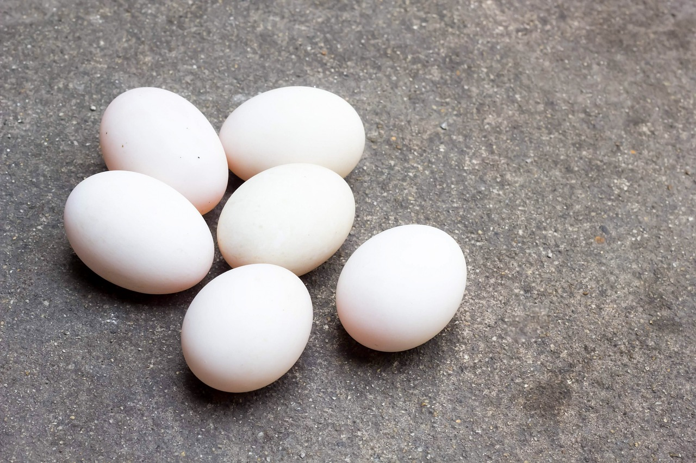
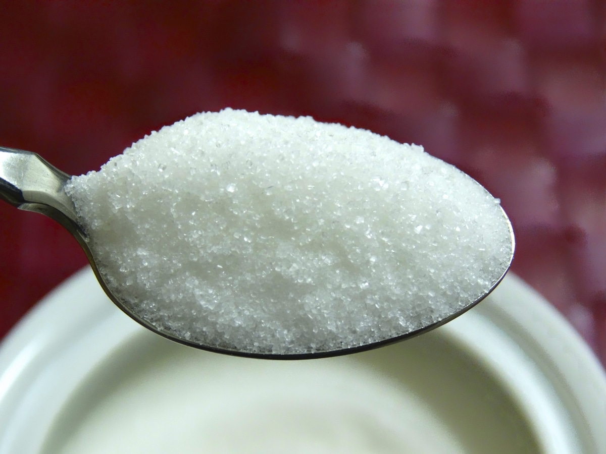
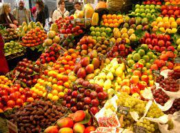
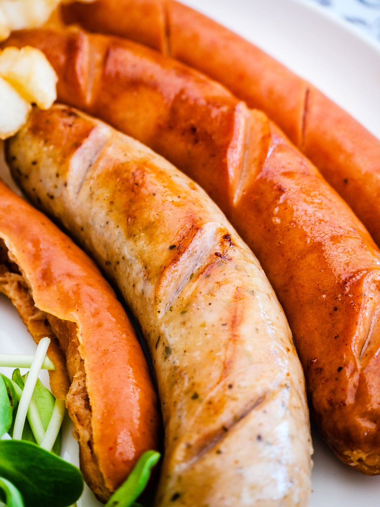
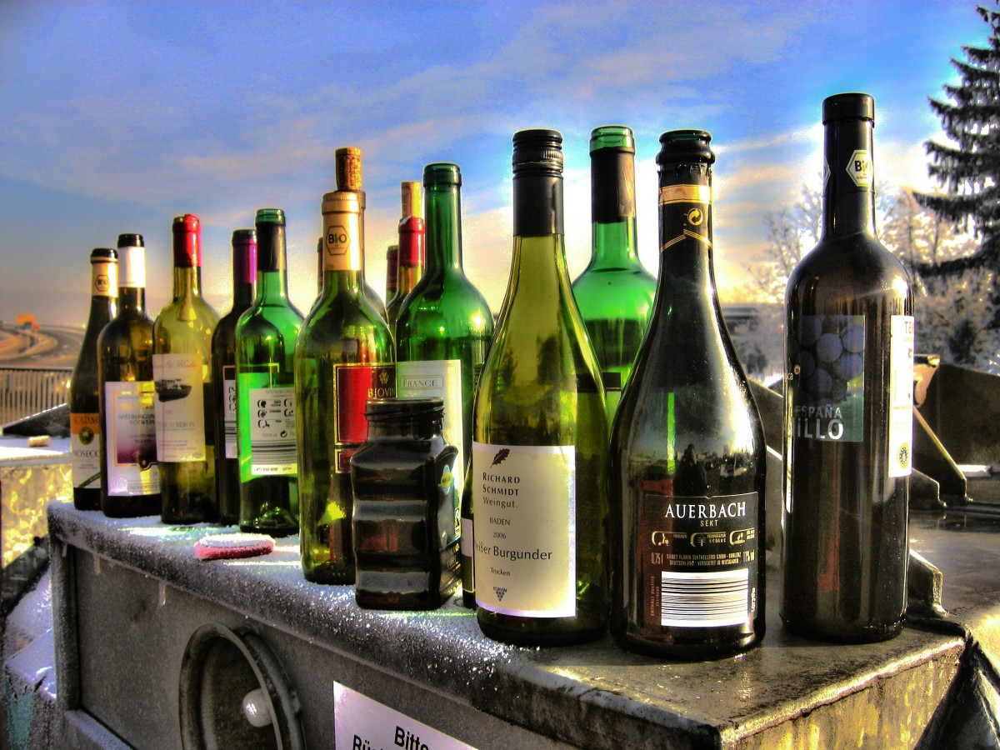
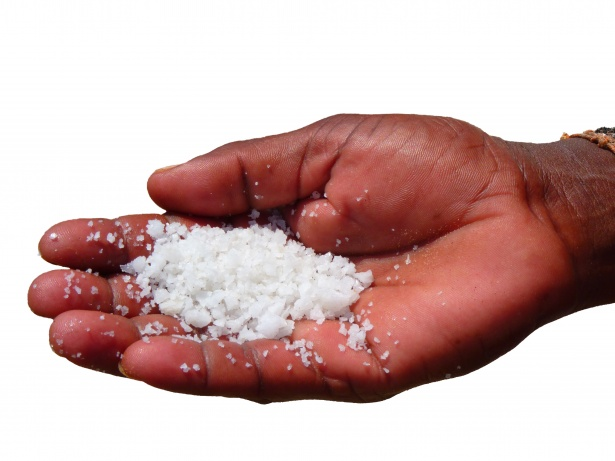

健康飲食建議
- 多吃水果和蔬菜：水果和蔬菜富含各種維生素、礦物質和纖維素，有助於保持身體健康。

- 選擇全穀物食品：全穀物食麥麵包、糙米等含有較多的纖維素和營養物質，有助於降低患病風險。

- 控制攝入脂肪：盡量避免高脂肪食物，特別是飽和脂肪和反式脂肪，可以選擇低脂肪的食品。

- 增加攝入蛋白質：蛋白質是身體的重要組成部分，可以選擇瘦肉、魚、豆類等富含蛋白質的食品。

- 控製糖的攝入：避免高糖飲食，特別是加工食品和飲料中含有的隱形糖分。

- 食物的多樣性：吃不同種類的食物可以保證身體得到多種營養物質，有助於維持身體健康。

- 避免過度加工食品：過度加工的食品通常含有很多添加劑和糖分，對身體健康不利。

- 適當控制飲酒：過量飲酒會對身體造成傷害，建議適量飲酒或者避免飲酒。

- 控製鹽的攝入：減少鹽的攝入可以降低高血壓和其他健康問題的風險。

- 均衡三餐：每天三餐均衡攝入可以維持身體正常運轉，不要忽略任何一餐。
 免責聲明
本網頁以上圖片都是CC0的授權，但仍有部份相片未能查明出處，如其版權遭侵犯謹此致歉，並歡迎有關人士提供相片來源。瞭解詳情
回到置頂
免責聲明
本網頁以上圖片都是CC0的授權，但仍有部份相片未能查明出處，如其版權遭侵犯謹此致歉，並歡迎有關人士提供相片來源。瞭解詳情
回到置頂